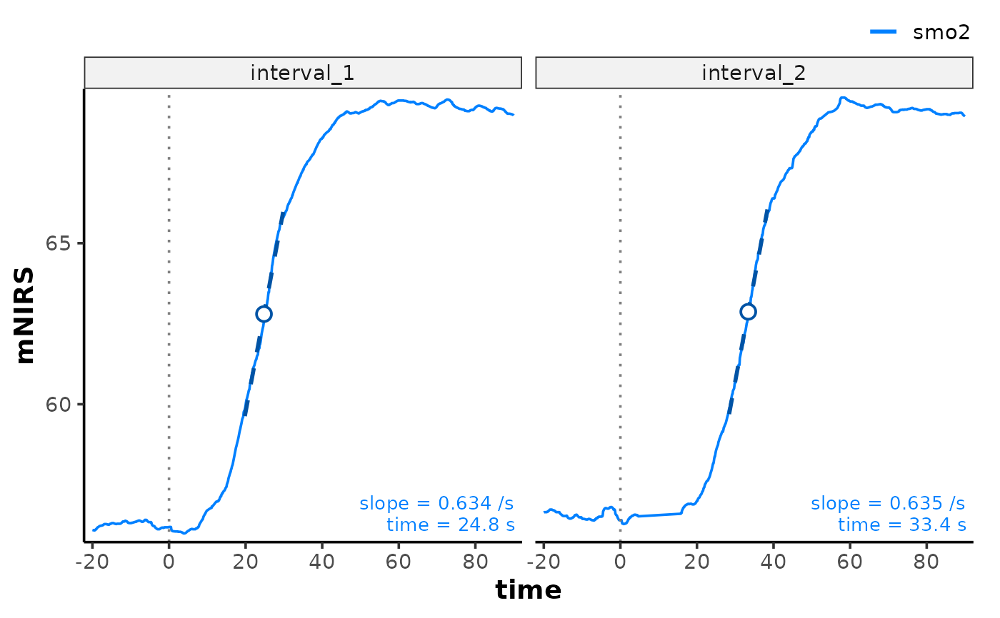

Create a default plot for an "mnirs_kinetics" object returned from
analyse_kinetics(). Observed signals are drawn per nirs_channel, faceted
by interval, with the fitted response overlaid and the key kinetics
coefficient(s) annotated per panel.
Usage
# S3 method for class 'mnirs_kinetics'
plot(x, fitted = TRUE, markers = TRUE, labels = TRUE, ...)Arguments
- x
An "mnirs_kinetics" object from
analyse_kinetics().- fitted
Logical. Default is
TRUE; overlays a dashed fitted curve for parametric methods ("peak_slope","monoexponential","exponential_drift","biexponential","sigmoidal","sigmoidal_drift") in a darker shade of the channel colour."response_time"has no fitted curve.- markers
Logical. Default is
TRUE; draws a dotted vertical line at the response onset (start_time) and key coefficient points in a darker shade of the channel colour.- labels
Logical. Default is
TRUE; annotates each panel with the key coefficient value(s) for the fitted method, in the right-hand corner the observed signal leaves clear.- ...
Additional arguments.
Value
A ggplot2 object.
Details
Accepts some arguments in ..., such as label_size passed to
ggplot2::geom_text(). Also accepts args passed to plot.mnirs(), such as
points, time_labels, nrow, ncol, or scales.
A method with no annotation spec in kinetics_annotations() plots the
observed signal and fitted curve only, without markers or labels.
Examples
result <- read_mnirs(
example_mnirs("train.red"),
nirs_channels = c(smo2 = "SmO2"),
time_channel = c(time = "Timestamp (seconds passed)"),
zero_time = TRUE,
verbose = FALSE
) |>
resample_mnirs(method = "linear", verbose = FALSE) |>
extract_intervals(
group_intervals = "distinct",
start = by_time(368, 1084),
span = c(-20, 90),
zero_time = TRUE,
verbose = FALSE
) |>
analyse_kinetics(
method = "peak_slope",
span = 10,
verbose = FALSE
)
plot(result)
